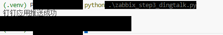
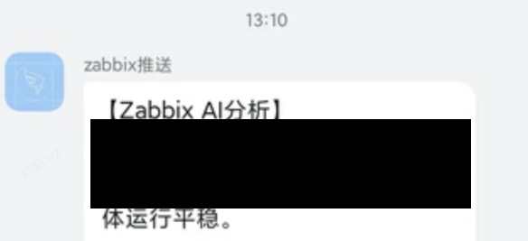

消息投递阶段
钉钉应用推送打通
目标
让已经生成的 AI 分析结果不只停留在本地终端，而是可以自动推送到实际接收人，实现值班通知和巡检结果播报。
1. 推送方案选型
这里没有采用群机器人方案，而是使用钉钉企业内部应用推送。这样可以更灵活地控制接收范围，也更符合企业内通知场景。
2. 脚本逻辑
zabbix_step3_dingtalk.py 通过钉钉企业应用凭证获取临时调用凭据，再调用应用消息发送接口，把 AI 生成的分析文本发送给指定接收人列表。公开页面不展示真实应用凭证、接收人标识或任务标识。
python .\zabbix_step3_dingtalk.py命令行验证截图包含接口返回的任务标识，公开页面使用脱敏截图保留消息接口调用成功的结论。

移动端接收截图包含设备名称示例，公开页面使用脱敏截图说明消息已完成送达验证。

3. 阶段成果
完成这一阶段后，项目已经具备从“本地分析脚本”转变为“可通知实际用户”的能力，后续只要把 AI 分析流程和钉钉推送整合起来，就能形成完整闭环。
本阶段成果
钉钉应用消息链路已打通，AI 生成的分析结果能够稳定推送到实际接收端。